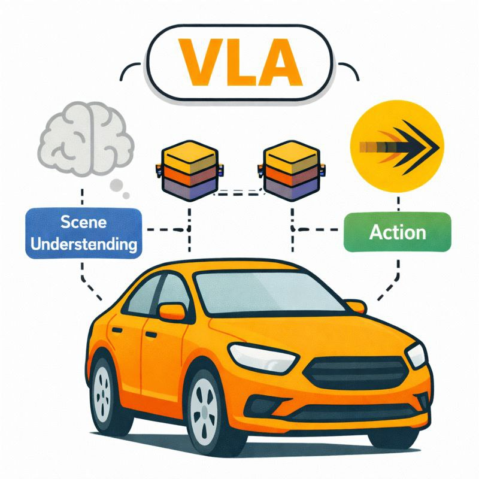

AutoMoT: A Unified Vision-Langauge-Action Model with Asynchronous Mixture-of-Transformers for End-to-End Autonomous Driving
Abstract
Integrating vision-language models (VLMs) into end-to-end (E2E) autonomous driving (AD) systems has shown promise in improving scene understanding. However, existing integration
strategies suffer from several limitations: they either struggle to resolve distribution misalignment between reasoning and action spaces, underexploit
the general reasoning capabilities of pretrained VLMs, or incur substantial inference latency during action policies generation, which degrades
driving performance. To address these challenges, we propose AutoMoT in this work, an end-to-end AD framework that unifies reasoning and action
generation within a single vision-language-action (VLA) model. Our approach leverages a mixture-of-transformer (MoT) architecture with joint
attention sharing, which preserves the general reasoning capabilities of pre-trained VLMs while enabling efficient fast-slow inference through
asynchronous execution at different task frequencies. Additionally, we introduce a VLA-oriented differentiable action refiner that further enhances
driving performance via diffusion-based fine-tuning. Extensive experiments on multiple benchmarks, under both open- and closed-loop settings, demonstrate
that AutoMoT achieves competitive performance compared to state-of-the-art methods.